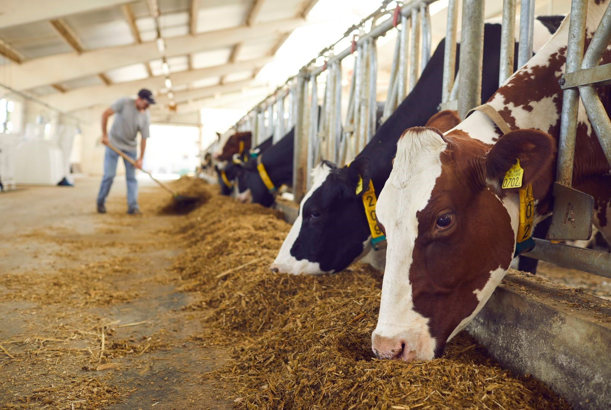

Sustainable Living Tips

Grow Your Own Food
Start a garden in your backyard or on your balcony to grow fresh, organic produce. Not only will you reduce your carbon footprint, but you'll also enjoy the benefits of eating healthy, homegrown food.
- Choose plants that are native to your region
- Use compost to enrich the soil
- Water your plants with rainwater
Reduce Waste
Simple lifestyle changes can help reduce waste and protect the environment. From composting to reducing plastic use, every action counts.
- Avoid single-use plastics
- Recycle and compost food scraps
- Purchase reusable items instead of disposable


Ethical Animal Husbandry
Learn how to care for animals in a way that is compassionate and sustainable. From feeding practices to creating comfortable living spaces, ethical husbandry is key to keeping your animals happy and healthy.